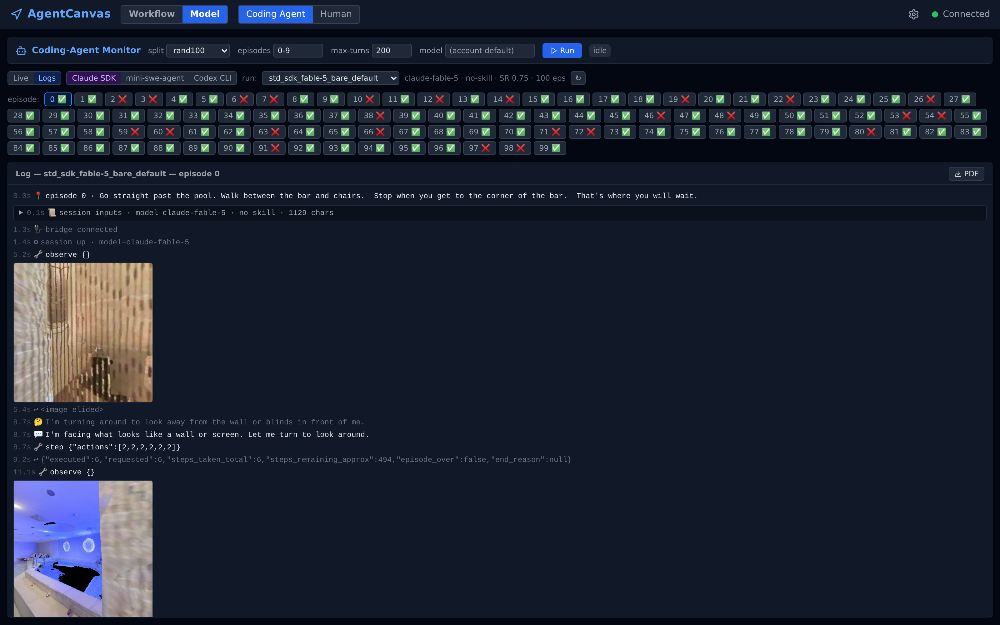
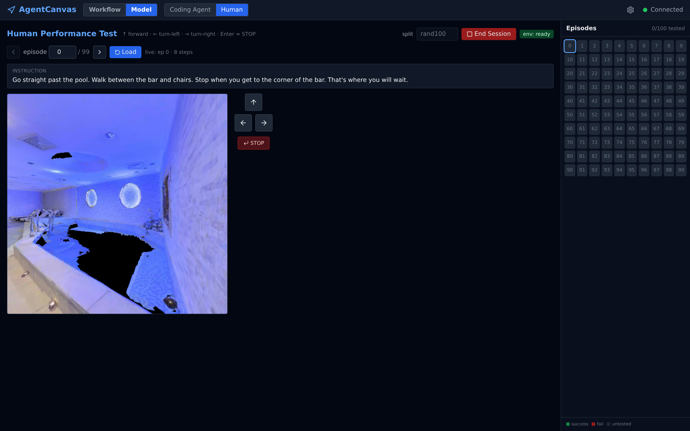

10Coding-Agent Harness
Stock coding agents — Claude Agent SDK, mini-swe-agent, Codex CLI — as VLN agents over one byte-equivalent tool surface.
Every other capability on this list runs agents the platform authored — graphs, nodes, wires. This one runs agents the platform did not author: a stock coding agent (Anthropic's Claude Agent SDK, the open ~100-line mini-swe-agent ReAct loop, or OpenAI's Codex CLI), with zero embodied specialization, dropped into a photorealistic building and asked to follow an R2R-CE navigation instruction. The platform's contribution is the seat, not the pilot: the env_habitat nodeset serves the world over its auto_host HTTP surface, a stdio MCP bridge (or its in-process toolset mirror) exposes exactly observe() and step(), and habitat's own env_habitat__evaluate scores the result — the same ruler as the verified VLN graphs. Everything lives in the repo-root coding-agent/ package.
Design docs: Coding-Agent Runner · Coding-Agent Monitor · Human Performance Tab · Coding-Agent Backend Surface · builds on Isolated Runtime Environments (server mode) and the env_habitat nodeset
1. What it measures
The question is whether general agentic scaffolding — built for editing code — can navigate an embodied environment with nothing but a camera and four buttons. The agent sees only what its tools return: observe() (egocentric RGB) and step(actions) (0 = STOP, 1 = forward 0.25 m, 2/3 = turn 15°). No pose, no depth, no map, no metrics; episode placement and evaluation stay driver-side. Conditions layer mechanisms on top of that bare floor: bare (nothing), nav (clearance readout, turn-budget broadcast, STOP-confirmation gate, look_around(), optionally a navigation skill text), persona (keep the stock Claude Code system prompt), and wp/wp-nav (a waypoint action space: panoramic observe() with numbered candidates from a SmartWay waypoint predictor, goto(waypoint), stop()).
2. One tool surface, three harnesses
The harness is the moved variable, so the tool surface must not move: coding-agent/bridges/mcp_bridge.py is the single implementation of the toolset, and every harness reaches it in whichever way that harness natively can.
| Harness | Scaffolding | Reaches the env via | Auth / billing |
|---|---|---|---|
sdk | Claude Agent SDK (closed) | spawns the bridge as a stdio MCP server | Claude subscription (adapter strips a stray API key) |
mini | mini-swe-agent ReAct loop (open) | coding-agent/mini/toolset.py — the bridge ported verbatim, in-process | provider API key via litellm; local models via a context-pinned ollama |
codex | OpenAI Codex CLI (closed) | mounts the same bridge file as a stdio MCP server | ChatGPT subscription (codex login) |
Two gates keep "same experiment" honest: coding-agent/mini/check_equivalence.py asserts the mini port is byte-equal to the bridge (tool names, descriptions, schemas, clearance math, waypoint annotation — down to identical PNG bytes), and coding-agent/prompts.py refuses to run a nav cell whose skill text drifted from the frozen md5. The prompt drafts themselves are checked byte-equal against the frozen legacy driver they were moved from.
3. Cells, not flags — the standard board
Comparability is enforced structurally: a standard run is a cell (harness × model × condition × effort tier) from the registry in coding-agent/cells.py, and every protocol knob — 200 turns, 512 px RGB, rand100 episodes 0–99, 500 movement actions, 2400 s per episode — is frozen there, not passed on a command line. Overriding anything requires --nonstd, which renames the run so it can never sit on the board.
# one frozen cell of the standard board (habitat auto_host already up) python coding-agent/stdrun.py run std_sdk_fable-5_bare_default python coding-agent/stdrun.py board # grid status from summaries on disk python coding-agent/stdrun.py compare std_sdk_opus-4.8_bare_default std_sdk_fable-5_bare_default
The runner is built for long metered batches: workers resume per-index into the same run dir, a DRAIN sentinel (or stdrun.py drain) stops a batch at an episode boundary without cutting in-flight work, subscription throttling retries outside the episode's wall-clock budget, and compare runs an exact paired McNemar over same-episode successes. stdrun.py experiments maps the paper's E-numbered table onto cells and their live status.
4. Watch it, and baseline it against a human
Two frontend tabs sit on top of the artifacts. The Coding Agent tab hosts a Claude-SDK run with one click and renders any run from any harness as a unified live log — thinking, tool calls, and the agent's egocentric frames inlined at the exact observe() calls that produced them (design doc). The Human tab puts a person in the same seat — same episodes, same discrete actions, same ruler — so human SR/SPL lands directly beside the agent cells (design doc).

std_sdk_fable-5_bare_default, SR 0.75 over 100 episodes — with episode 0's trajectory rendered as a unified log, frames inlined at their observe() calls.
5. Key files
| Piece | Where |
|---|---|
| Unified runner (CLI) | coding-agent/stdrun.py · cells.py · driver.py · prompts.py |
| Harness adapters | coding-agent/harnesses/ — claude_sdk.py · mini_swe.py · codex_cli.py |
| Tool surface | coding-agent/bridges/ — mcp_bridge.py · wp_bridge.py; mini mirror in coding-agent/mini/ |
| Skills + waypoint shim | coding-agent/skills/ · coding-agent/wp_predictor_shim/ |
| Monitor UI entry | coding-agent/uirun.py (spawned by app/services/coding_agent_runner.py) |
| Frozen legacy drivers | coding-agent/legacy/ — provenance + equivalence fixtures, never edited |
| Artifacts | outputs/beta-coding-agent/ · outputs/beta-react-harness/ · outputs/beta-codex-agent/ · outputs/human/ |
Status
Working; the std-v2 board is mid-flight on the dev/coding-agent branch (run stdrun.py board for the live grid — the board on disk, never a doc, is the source of truth for numbers). The three formerly separate harness directories were unified into coding-agent/ on 2026-07-20.